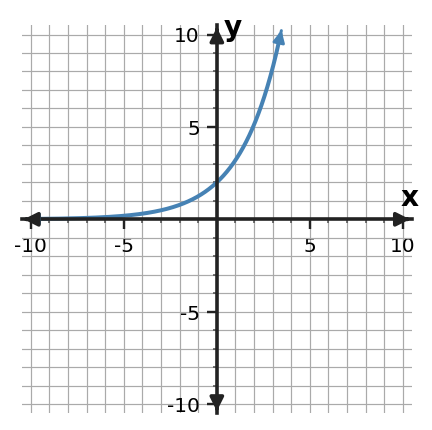

Writing Exponential Equations
Guided Notes
Use patterns, representations, and evidence to explain how the mathematics works.
Learning Target
Students will write exponential equations from tables, graphs, and situations.
- I can build exponential equations using an initial value and a growth or decay factor.
- I can use exponential equations to predict values from tables, graphs, and situations.
- I can formulate exponential equations that represent repeated percent increase or decrease.
Vocabulary / Key Notation Preview
initial value • growth factor • decay factor • exponential equation • percent change
Sort the vocabulary. Write each vocabulary word in the column that best matches what you know right now. You may move a word later.
| Know for sure | Recognize | Don't know yet |
|---|---|---|
What's to Come
DO NOT SOLVE IT YET.
Circle anything familiar, underline symbols, labels, conditions, data, or features that seem important, and write short notes about what you think may matter later.
A quantity follows the shared table. Identify what seems to stay consistent from row to row, identify the starting value, and propose one equation that would continue the pattern. Explain what each number in your equation represents.
| x | y |
|---|---|
| 0 | 8 |
| 1 | 12 |
| 2 | 18 |
| 3 | 27 |
Let's Get Started
Skim the section. Record what catches your attention before you read closely.
| What I noticed | |
|---|---|
| What I predict | |
| What I wonder |
READ IN SHORT CHUNKS.
Annotate the words and visuals together. Underline evidence, circle or highlight bold vocabulary, label arrows, measurements, or important features, connect sentences to figures, and jot short questions or connections in the margins.
I can build exponential equations using an initial value and a growth or decay factor.
An exponential equation such as $y=ab^x$ separates two jobs. The initial value $a$ tells where the relationship starts when $x=0$. The base $b$ is the growth factor or decay factor applied once for every one-unit increase in $x$. Reading those roles first keeps the equation connected to the table, graph, or situation it represents.
From a table with one-unit x-steps, find $a$ by reading the output at $x=0$. Then divide a later output by the previous output to find $b$. A second ratio should confirm the same multiplier. If the x-values are not spaced one unit apart, the ratio you observe belongs to that larger interval and should not automatically be used as the one-unit base.
From a graph, $a$ is the y-intercept in the basic unshifted model. The direction of the curve helps identify whether $b$ is above 1 or between 0 and 1, but the exact factor usually needs a second point or equivalent information. From a context, look for a starting amount and a repeated multiplier or percent change tied to a consistent time interval.
- Why does $a$ equal the output at $x=0$ in $y=ab^x$?
- How can you find $b$ from a table with one-unit input steps?
- Why should you pay attention to the spacing of x-values before using a ratio as the base?
$a=y(0)$
Graph: y-intercept
$b=\frac{y(x+1)}{y(x)}$ for one-unit steps
$b\gt1$: growth; $0\lt b\lt1$: decay
$y=12(1.5)^x$
Starts at 12; multiplies by 1.5 each step.
$y(1)=18$, $y(2)=27$
Both steps confirm the same factor.
Example 1: Build an Exponential Equation
Write an exponential equation of the form $y=a(b)^x$ for the table.
| x | y |
|---|---|
| 0 | $\displaystyle 3$ |
| 1 | $\displaystyle 6$ |
| 2 | $\displaystyle 12$ |
| 3 | $\displaystyle 24$ |
You Try It 1: Build an Exponential Equation
Write an exponential equation of the form $y=a(b)^x$ for the table.
| x | y |
|---|---|
| 0 | $\displaystyle 5$ |
| 1 | $\frac{15}{2}$ |
| 2 | $\frac{45}{4}$ |
| 3 | $\frac{135}{8}$ |
Example 2: Compare Function Models
The graph below is consistent with a model whose $y$-intercept is 3. Compare the candidates $y=3(1.5)^x$ and $y=1.5(3)^x$. Which equation fits the graph more directly? Use the $y$-intercept first, then check the multiplicative growth.

You Try It 2: Compare Function Models
The graph below is consistent with a model whose $y$-intercept is 2. Compare the candidates $y=2(1.6)^x$ and $y=1.6(2)^x$. Which equation fits the graph more directly? Support your choice with one intercept feature and one growth feature.

Example 3: Build an Exponential Equation
Write an exponential equation of the form $y=a(b)^x$ for the table.
| x | y |
|---|---|
| 0 | $\displaystyle 24$ |
| 1 | $\displaystyle 12$ |
| 2 | $\displaystyle 6$ |
| 3 | $\displaystyle 3$ |
You Try It 3: Build an Exponential Equation
Write an exponential equation of the form $y=a(b)^x$ for the table.
| x | y |
|---|---|
| 0 | $\displaystyle 10$ |
| 1 | $\displaystyle 8$ |
| 2 | $\frac{32}{5}$ |
| 3 | $\frac{128}{25}$ |
I can use exponential equations to predict values from tables, graphs, and situations.
Once an exponential equation is built, it becomes a prediction rule. To predict an output, substitute the input and evaluate the power before multiplying by the initial value. The exponent counts how many times the factor is applied from the reference input $x=0$. Keeping that meaning visible helps prevent treating the exponent as ordinary multiplication.
Predictions should include the meaning of the result, not only a number. If $V(t)=500(0.9)^t$ models value in dollars after $t$ years, then $V(3)$ is a modeled dollar value after three years. The factor 0.9 does not mean subtract 0.9 dollars each year; it means keep 90% of the previous value each year.
A model is also a representation with limits. Inputs should make sense for the situation, units should remain consistent, and a predicted value should be checked for reasonableness. Exponential equations can produce outputs for many inputs, but a real-world context may only make sense for nonnegative time or for a limited observed range.
- What does the exponent count in a basic repeated-change model?
- In $V(t)=500(0.9)^t$, what does the factor 0.9 mean from one year to the next?
- Why can an algebraically valid input still be inappropriate in a real-world prediction?
- Identify the input and its unit.
- Substitute it for the exponent variable.
- Evaluate the power, then multiply by the initial value.
- State the output with context and units.
- Check whether the result and input are reasonable for the model.
Example 4: Use Equation Structure
Use $f(x)=64(\frac{1}{2})^x$ to find $f(4)$.
You Try It 4: Use Equation Structure
Use $f(x)=25(\frac{4}{5})^x$ to find $f(3)$.
I can formulate exponential equations that represent repeated percent increase or decrease.
Percent change is converted to a multiplier before it enters an exponential equation. For repeated percent increase, write the rate as a decimal $r$ and use the factor $1+r$. For repeated percent decrease, use the factor $1-r$. The 1 represents the whole amount that exists before the change; adding or subtracting $r$ adjusts how much of that amount remains after one period.
For example, a 12% increase gives a factor of $1.12$, not $0.12$. The factor says each new value is 112% of the previous value. A 12% decrease gives a factor of $0.88$, meaning 88% remains after each period. These translations prevent the common mistake of placing the percent itself directly into the base.
The interval attached to the percent matters. A 5% yearly change uses a factor applied once per year when the exponent counts years. A monthly rate needs a monthly exponent interval. An equation is only a faithful model when the initial value, factor, exponent, and units all describe the same repeated-change structure.
- What factor represents a 7% increase? What factor represents a 7% decrease?
- Why is 0.30 not the growth factor for a 30% increase?
- What must match between the wording of a percent change and the exponent variable?
| Statement | Rate | Factor |
|---|---|---|
| 18% increase | $r=0.18$ | $1+r=1.18$ |
| 18% decrease | $r=0.18$ | $1-r=0.82$ |
| Keeps 64% | 36% decrease | $0.64$ |
Equation patterns: $y=a(1+r)^x$ for repeated increase and $y=a(1-r)^x$ for repeated decrease.
Example 5: Translate Percent Change
A colony begins with 80 cells and increases by 25% each hour. Write an exponential equation for the amount after $h$ hours.
You Try It 5: Translate Percent Change
A savings account starts with \$500 and grows by 6% each year. Write an exponential equation for the amount after $t$ years.
Example 6: Translate Percent Change
A quantity begins at 800 and decreases by 10% per period. Write a model for its value after $t$ periods.
You Try It 6: Translate Percent Change
A quantity begins at 2500 and decreases by 18% per period. Write a model for its value after $t$ periods.
Summary
- In $y=ab^x$, $a$ is the initial value and $b$ is the per-unit multiplier.
- Use tables, graphs, or contexts to identify the starting value and repeated factor before writing the equation.
- Convert repeated percent increase to $1+r$ and repeated percent decrease to $1-r$.
- Use equations for predictions only with meaningful inputs, units, and context interpretations.
Common Mistakes
- Using the percent change itself as the base instead of converting it to a multiplier.
- Switching the roles of initial value and growth/decay factor.
- Ignoring x-interval spacing when finding a factor from a table.
- Reporting a prediction without context, units, or a reasonableness check.